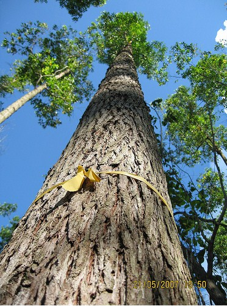

Ampupu atau Eucalyptus urophylla secara alami hidup pada tanah vulkanik, berada pada tujuh pulau di kawasan timur Indonesia (Timor,Flores, Wetar, Lembata (Lomblem), Alor, Adonara dan Pantar) pada ketinggian berkisar dari 180 m hingga 3000 m.
Tumbuh baik pada tanah berdrainase baik dan bersifat toleran terhadap tanah padat dan asam. Nama lainnya adalah Eucalyptus decaisneana yang merupakan famili Myrtaceae. Musim bunga berlangsung antara bulan Januari hingga Maret, sedangkan buah masak dan siap dipanen pada bulan Juni hingga September.
Pembuahan terjadi secara periodik. Buah berbentuk kapsul, jika sudah masak kapsul akan merekah.